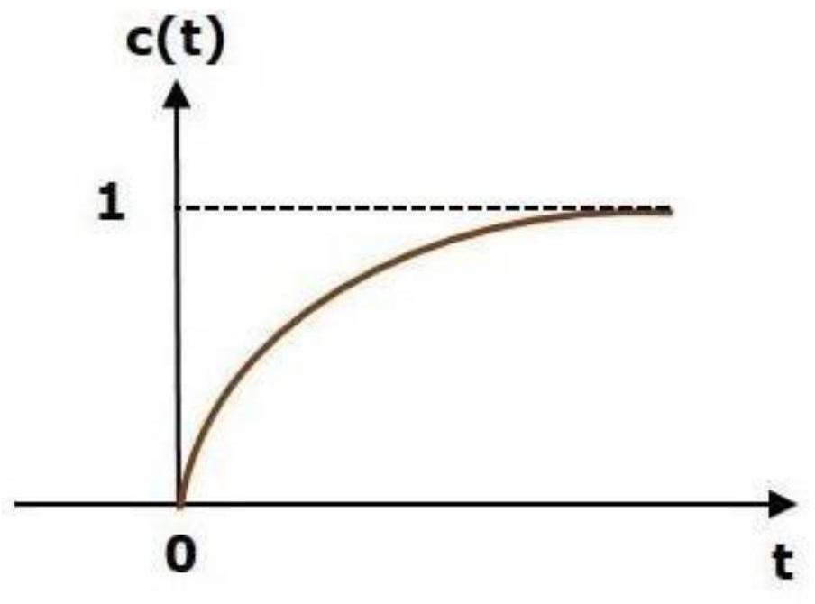

Unit-7: Stability Concept & Root Locus Method
Stability
Stability is an important concept. In this chapter, let us discuss the stability of system and types of systems based on stability.
What is Stability?
A system is said to be stable, if its output is under control. Otherwise, it is said to be unstable. A stable system produces a bounded output for a given bounded input.
The following figure shows the response of a stable system.
This is the response of first order control system for unit step input. This response has the values between 0 and 1. So, it is bounded output. We know that the unit step signal has the value of one for all positive values of t including zero. So, it is bounded input. Therefore, the first order control system is stable since both the input and the output are bounded.
Types of Systems based on Stability
We can classify the systems based on stability as follows.
- Absolutely stable system
- Conditionally stable system
- Marginally stable system
Routh- Hurwitz Criterion
Before discussing the Routh-Hurwitz Criterion, firstly we will study the stable, unstable and marginally stable system.
- Stable System: If all the roots of the characteristic equation lie on the left half of the 'S' plane then the system is said to be a stable system.
- Marginally Stable System: If all the roots of the system lie on the imaginary axis of the 'S' plane then the system is said to be marginally stable.
- Unstable System: If all the roots of the system lie on the right half of the 'S' plane then the system is said to be an unstable system.
Statement of Routh-Hurwitz Criterion
Routh Hurwitz criterion states that any system can be stable if and only if all the roots of the first column have the same sign and if it does not has the same sign or there is a sign change then the number of sign changes in the first column is equal to the number of roots of the characteristic equation in the right half of the s-plane i.e. equals to the number of roots with positive real parts.
Necessary but not sufficient conditions for Stability
We have to follow some conditions to make any system stable, or we can say that there are some necessary conditions to make the system stable.
Consider a system with characteristic equation:
- All the coefficients of the equation should have the same sign.
- There should be no missing term.
If all the coefficients have the same sign and there are no missing terms, we have no guarantee that the system will be stable. For this, we use Routh Hurwitz Criterion to check the stability of the system. If the above-given conditions are not satisfied, then the system is said to be unstable. This criterion is given by A. Hurwitz and E.J. Routh.
Advantages and Limitations of Routh- Hurwitz Criterion
Advantages of Routh- Hurwitz Criterion
- We can find the stability of the system without solving the equation.
- We can easily determine the relative stability of the system.
- By this method, we can determine the range of K for stability.
- By this method, we can also determine the point of intersection for root locus with an imaginary axis.
Limitations of Routh- Hurwitz Criterion
- This criterion is applicable only for a linear system.
- It does not provide the exact location of poles on the right and left half of the S plane.
- In case of the characteristic equation, it is valid only for real coefficients.
The Routh- Hurwitz Criterion
Consider the following characteristic Polynomial
When the coefficients $a_0, a_1 ...a_n$ are all of the same sign, and none is zero.
Step 1: Arrange all the coefficients of the above equation in two rows:
Step 2: From these two rows we will form the third row:
Where,
(And so on for $b_5, b_7, \dots$)
Step 3: Now, we shall form fourth row by using second and third row:
Where,
(And so on for $c_5, c_7, \dots$)
Step 4: We shall continue this procedure of forming a new rows until the $s^0$ row is reached.
Example
Check the stability of the system whose characteristic equation is given by
Solution
Obtain the arrow of coefficients as follows
Calculating $b_1, b_2, b_3$:
Calculating $c_1, c_2, c_3$:
Calculating $d_1, d_2, d_3$:
The completed Routh Array:
Since all the coefficients in the first column (1, 2, 4, 3.5, 1) are of the same sign, i.e., positive, the given equation has no roots with positive real parts; therefore, the system is said to be stable.